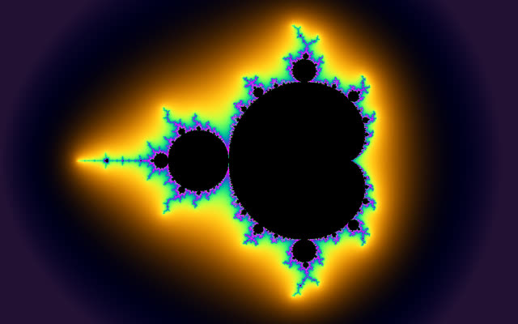
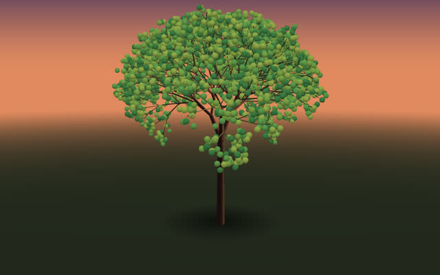
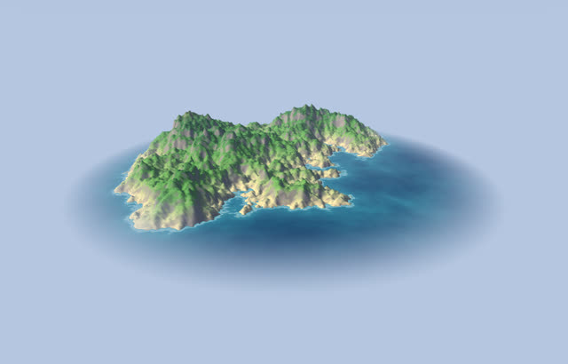
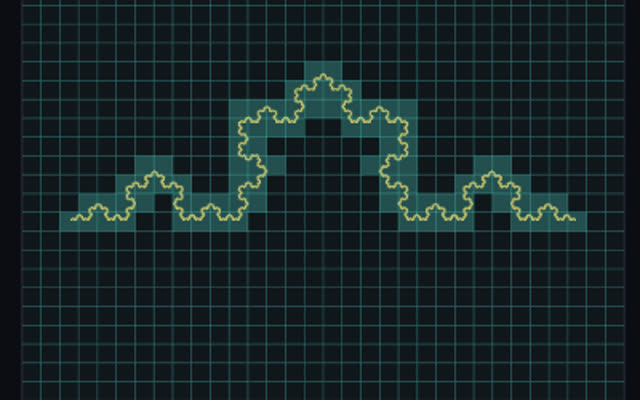

5algoritmos fractales
3módulos con WebGL (GPU)
≈ 40×más rápido en GPU que en CPU (1080p)
0dependencias: abre y funciona
Los cinco módulos

MÓDULO 1WebGL
Conjuntos de escape
Mandelbrot y Julia con zoom interactivo, construcción capa por capa y vista dividida.
Pachas Auris, Pieers Fernando
Abrir →
MÓDULO 2Canvas 2D
IFS y juego del caos
Un punto, un dado y unas pocas reglas dibujan el helecho de Barnsley y el triángulo de Sierpinski.
Cerna Aguilar, Emily Andrea
Abrir →

MÓDULO 3Canvas 2D + WebGL
L-systems
Plantas, bosques y curvas por reglas de reescritura, con modo paso a paso y vista 3D.
Flores Cortez, Valeria Alexandra
Abrir →

MÓDULO 4WebGL
Terreno fractal
Paisajes 3D con diamond-square: rugosidad, agua, sol y semilla en vivo.
Sihuacollo Sierra, Keyla Noemi
Abrir →

MÓDULO 5Canvas 2D
Dimensión fractal
Box-counting sobre figuras de dimensión conocida o sobre una imagen propia.
Puente Carmen, Rodrigo Joaquin
Abrir →